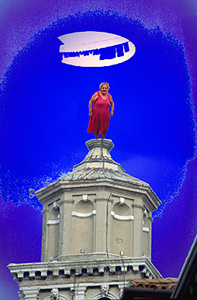

 Lidia on the Campanile of the Carmini, Venice On the Faculties of:
Art Photography: Bodies of Work : As an artist, for 20 years I have been photographing laundry on islands in the Venetian Lagoon and the casalinghe, (traditional Italian housewives), who hang it. I also have invented a kind of photographic emulsion which floats in water instead of being glued to a piece of paper. As a photo historian I am writing about the themes of sexual selection and sibylline imagery in the work of 19th century photographer Julia Margaret Cameron. Exhibitions: A t Harvard and Northeastern universities and extensively elsewhere in Boston, Chicago, on Cape Cod, & in Venice, Italy. In 1994-95 I won a Gladys Kriebel Delmas Foundation Fellowship to spend a year in Venice, Italy. Education: BA: Radcliffe College, Harvard University, Magna Cum Laude, MA: Urban Planning, University of Colorado; Fine Arts. MFA: School of the Art Institute of Chicago, where I studied with Generative Systems founder and artist Sonia Landy Sheridan Email: Holly Smith Pedlosky
|
||||||||||||||||
|
|
||||||||||||||||